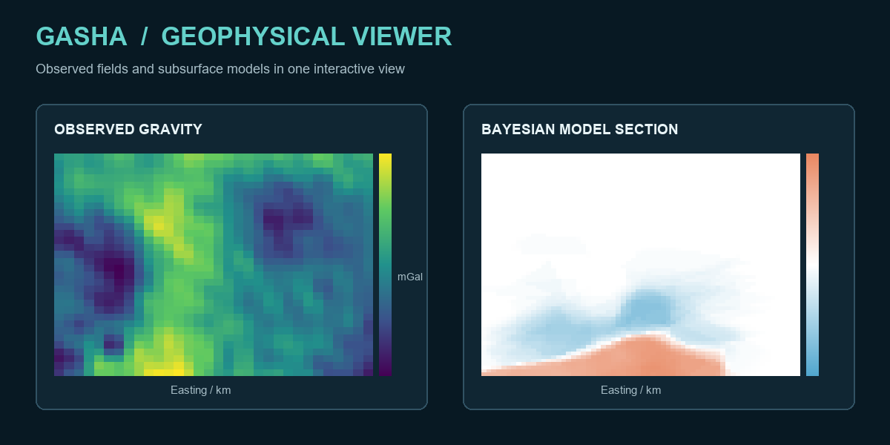

Gasha Geophysical Viewer
Interactive exploration of subsurface models and their gravity and magnetic observations.

This browser viewer brings existing Gasha inversion outputs together in one place. Rotate the 3D model, select a body to inspect a cross section, and compare observed gravity or RTP magnetic data with predictions from Random Forest and Bayesian PMD models.
Model uncertainty follows the selected section. The viewer uses precomputed, read-only data and performs visualization in the browser; it does not run inversion or training.